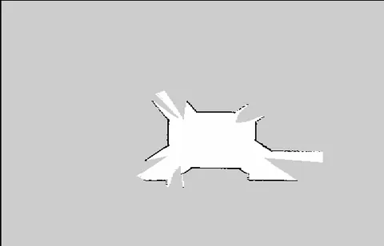
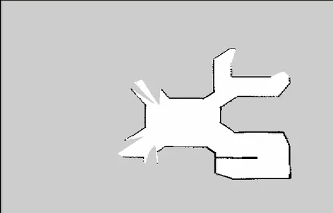
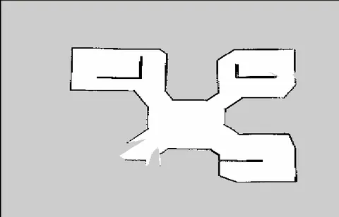
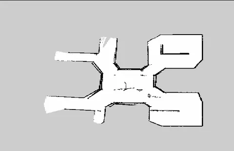
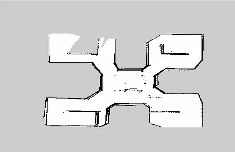
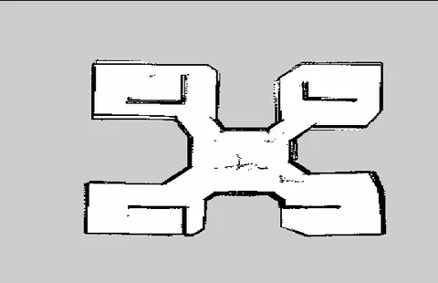
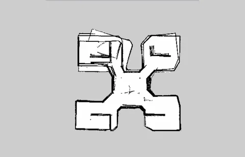
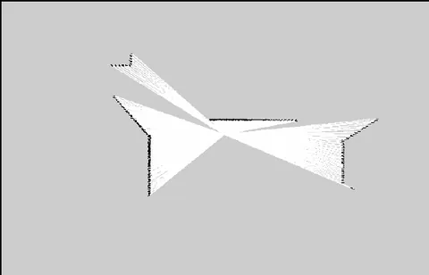
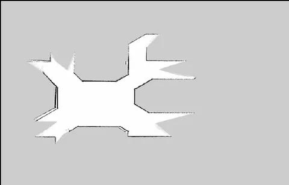
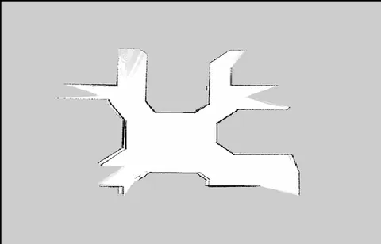

Multi-robot SLAM and autonomous exploration
Part of the MSIT national R&D project AI Bots collaboration platform and self-organizing AI; I'm listed as a participating researcher in the year-2 interim report (Dec 2023). The goal was to compare sampling-based frontier exploration (RRT) with DQN-based exploration on the same indoor map, with up to four TurtleBot3 robots.













What I built
- A custom Gazebo world and a four-robot launch setup.
- Per-robot gmapping, AMCL and move_base under separate namespaces, merged with map_merge from known start poses. The Burger has no camera, so feature-based merging wasn't an option.
- A Melodic port of RRT_Exploration; read through and modified the C++ frontier detectors and the Python filter and assigner.
- A redesigned TurtleBot3 DQN environment: LiDAR samples 24 → 360, state size 28 → 364, reward +1500 at the goal and −600 on collision, trained for 3,000 episodes.
- Two internal talks on ROS, SLAM and navigation, and on RL from MDPs to DQN; final presentation on Aug 30, 2023.
What didn't work
Multi-agent DQN exploration never ran end to end. The four-robot environment and nodes were in place, but loading four networks and four environments into one simulation broke. The fix I'd make is one environment that dispatches commands per robot. The bigger lesson: multi-robot systems fail on topics, TF and namespaces long before they fail on the algorithm, so I now design the environment first.